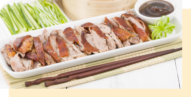
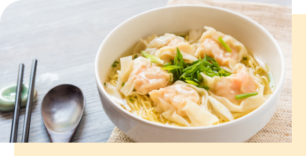
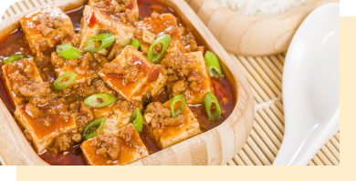
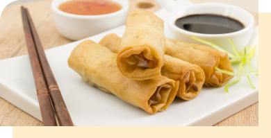
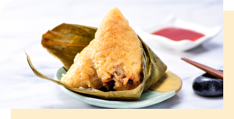

1. El pato Pekinés o pato laqueado a la pekinesa

Es uno de los platos más conocidos de la gastronomía china. Muchos patos son alimentados especialmente para ser consumidos de esta manera. Preparar este plato toma tiempo pero el resultado es crujiente y sabroso.
2. Sopa Wan Tan

Algunos aseguran que su nombre significa "tragarse las nubes". Esas pequeñas nubes son las que aquí conocemos como wantán: una masa de harina de trigo que se rellena principalmente de carne de cerdo, camarones y verduras. La sopa Wan Tan o sopa Wantán suele servirse, además, con fideos muy finos y cebolla china. Durante la celebración del año nuevo chino se suelen poner monedas de plata dentro de los wantanes para desear buena suerte.
3. El tofu picante (Mapo doufu)

A pesar de que la comida china no suele ser picante, este plato es típico de Chengdú, una ciudad en el sur donde la comida tiene esta particularidad. Es una combinación de tofu en una salsa roja picante, a menudo cubierto con carne picada de cerdo o ternera.
4. Rollitos de primavera

A pesar de que la comida china no suele ser picante, este plato es típico de Chengdú, una ciudad en el sur donde la comida tiene esta particularidad. Es una combinación de tofu en una salsa roja picante, a menudo cubierto con carne picada de cerdo o ternera.
5. Zongzi

Es un triángulo de arroz glutinoso con diferentes rellenos y enrollado con hojas de bambú. Envolverlo en las hojas de bambú no es tarea fácil, la técnica tradicional para hacerlo se hereda de unas familias a otras, al igual que su receta. Es un plato tradicional que se cocina al vapor o hervido y que los chinos preparan siempre en el Festival del barco dragón.